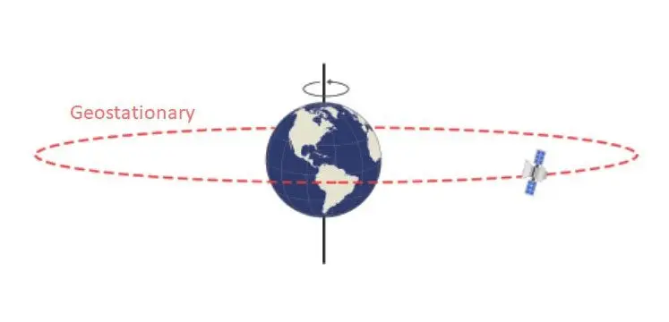
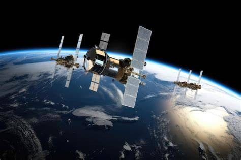
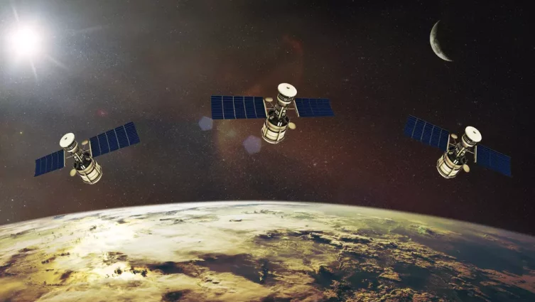

Sobre
O projeto Clear Horizon tem como foco principal reduzir a poluição espacial por meio de soluções inovadoras e sustentáveis. A proposta central envolve a reciclagem de satélites antigos e desativados, que já atingiram o fim de sua vida útil, além da renovação e otimização das rotas de foguetes.
Atualmente, uma grande quantidade de equipamentos permanece em órbita sem função, contribuindo para o aumento do lixo espacial e elevando os riscos de colisões. Pensando nisso, o projeto busca reaproveitar esses materiais sempre que possível, reduzindo o impacto ambiental fora da Terra.
O Clear Horizon possui dois objetivos principais: aumentar a segurança de missões espaciais, especialmente aquelas com tripulação, e diminuir significativamente a quantidade de detritos em órbita. Dessa forma, o projeto contribui para um futuro mais seguro e sustentável na exploração espacial.
Órbita Geoestacionária
A órbita geoestacionária é uma órbita circular situada a uma altitude específica sobre o equador terrestre, onde um satélite permanece fixo em relação a um ponto na superfície da Terra. Esta órbita permite manter uma posição constante no céu, o que é particularmente útil para satélites de comunicação e meteorologia.
Para que um satélite permaneça sempre sobre um determinado ponto da superfície da Terra sem a necessidade de propulsão vertical e horizontal, ele deve orbitar sempre a uma distancia fixa de 35 786 km acima do nível do mar, no plano do equador da Terra. Isso independente da massa do satélite. Os satélites brasileiros de comunicação da família Brasilsat são satélites de órbita geoestacionária.

Órbita média da terra
é a região do espaço ao redor da Terra acima da altitude da órbita baixa (2 000 km) e abaixo da altitude da órbita geoestacionária (35 786 km).
Os usos mais comuns de satélites, são nas áreas de navegação, comunicação e ciências geodésicas. A altitude mais comum nessas atividades é de 20 200 km, com um período orbital de 12 horas, como usado por exemplo, pelos satélites do sistema de posicionamento global (GPS).

Órbita média da terra
Em termos muito simples, a órbita terrestre baixa (LEO) é exatamente o que parece: Uma órbita ao redor da Terra com uma altitude que se situa na extremidade inferior do intervalo de órbitas possíveis. Isso é cerca de 2.000 quilômetros (1.200 milhas) ou menos. A maioria dos satélites encontra-se em LEO, assim como a Estação Espacial Internacional (ISS).
Os usos mais comuns de satélites, são nas áreas de navegação, comunicação e ciências geodésicas. A altitude mais comum nessas atividades é de 20 200 km, com um período orbital de 12 horas, como usado por exemplo, pelos satélites do sistema de posicionamento global (GPS).

Aumento no número de satélites
Até 2019 tinham menos de 500 satélites na órbita da Terra. Desde então, esse número vem saltando de forma exponencial e ainda não parece estarmos próximos de algum limite.
Ainda de acordo com a UNOOSA, no final de 2022 14 mil satélites na lista de lançamentos, com previsão de outros 100 mil a ocupar novos espaços durante a próxima década.
Isso reflete o quão dependentes de satélites nós somos. Hoje eles são responsáveis por internet, comunicação, monitoramento climático e mais uma infinidade de funções. Dessa forma, saber lidar com o lixo espacial fica cada vez mais importante.